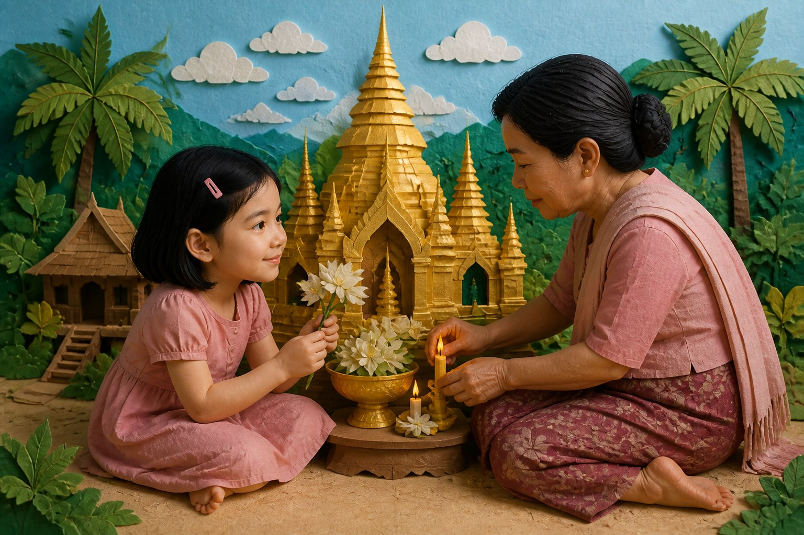
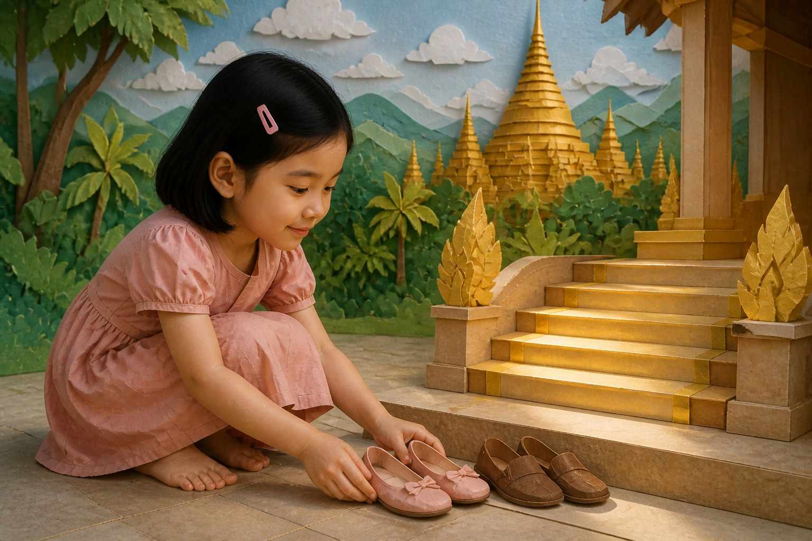
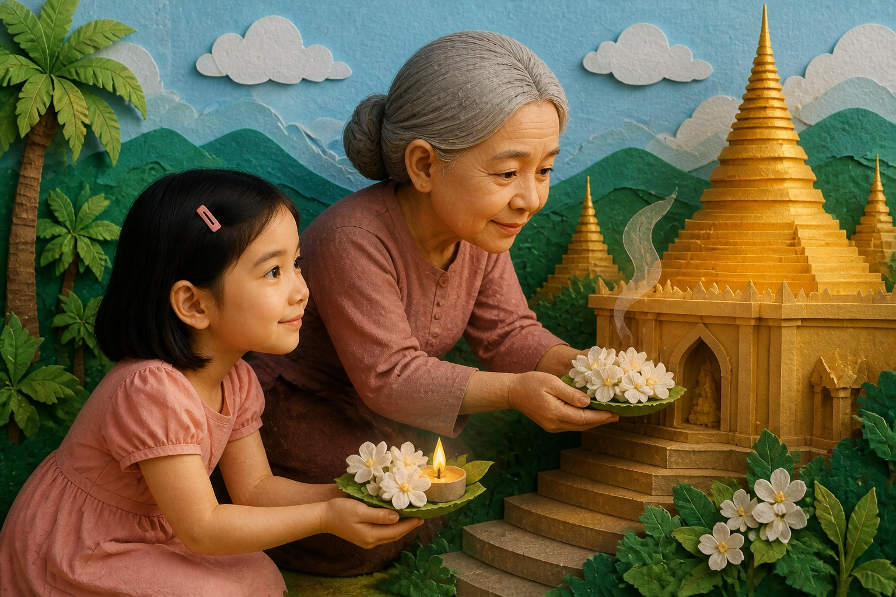

Quiet Golden Steps

On a bright afternoon, Grandma took Mudra to the pagoda at the edge of the village. The steps were long and warm from the sun. At the top, the golden structure caught the light in a quiet shimmer that made the whole hill feel holy and calm. Mudra stood still as she looked out over the rooftops, the trees, and the green ribbon of fields beyond them. The view was so beautiful that it seemed to slow the world around her.
She had seen pagodas in pictures, but seeing one in real life gave the image a new depth. It felt less like a symbol and more like a story shaped by generations of people who had come to seek peace there. The place was full of stillness, and Mudra could hear the wind moving gently through the trees.
Grandma showed Mudra how to walk slowly and respectfully around the pagoda. Mudra kept her voice soft and her steps gentle. She watched the elders bow their heads and close their eyes. She did not know the words they were saying, but she could feel the calm in the air. For a moment, she understood that some places hold silence in a way that makes people kinder and quieter inside.
Mudra stood for a while with her hands folded and let the stillness settle over her. The visit was not only a sightseeing trip. It became a lesson in patience, reverence, and the beauty of stepping away from noise for a little while.
As they walked back down the hill, Grandma pointed out carvings and stone details that Mudra had missed on the way up. Each shape told a story, and each story seemed connected to the people who had cared for the pagoda over many years. Mudra imagined the generations who had climbed the same steps, carried the same hopes, and looked out over the same fields with wonder. The place felt alive with memory.
By the time they reached the bottom, Mudra understood that the pagoda was not merely a building. It was a keeper of stories, peace, and belonging. She felt grateful that she had come to see it with Grandma, because the visit had given her a deeper way to understand Myanmar.

They walked softly. Mudra noticed how even children lowered their voices here. Together they offered flowers and lit a small candle. Smoke curled upward like a thin silver question. Mudra practiced the words that fit the place: please, quiet, flower, candle, offer, bow, peace, thank you.
A monk passed with a gentle smile. Mudra bowed, a little unsure, a little sincere. Nobody laughed. Respect, she learned, did not need to be perfect to be real.

Sitting in a shaded corner, Mudra felt her busy holiday settle into stillness. The tea shop had taught bravery. The market had taught choosing. School had taught continuing. Play had taught friendship. Here, the pagoda taught her how to be quiet with love.
"I understand a little more," Mudra told Grandma. Grandma touched Mudra's shoulder. "Understanding grows like a candle flame — small at first, then enough to see the next step."
Visitors remove shoes, speak softly, offer flowers, and light candles. Respect is shown with body and voice.